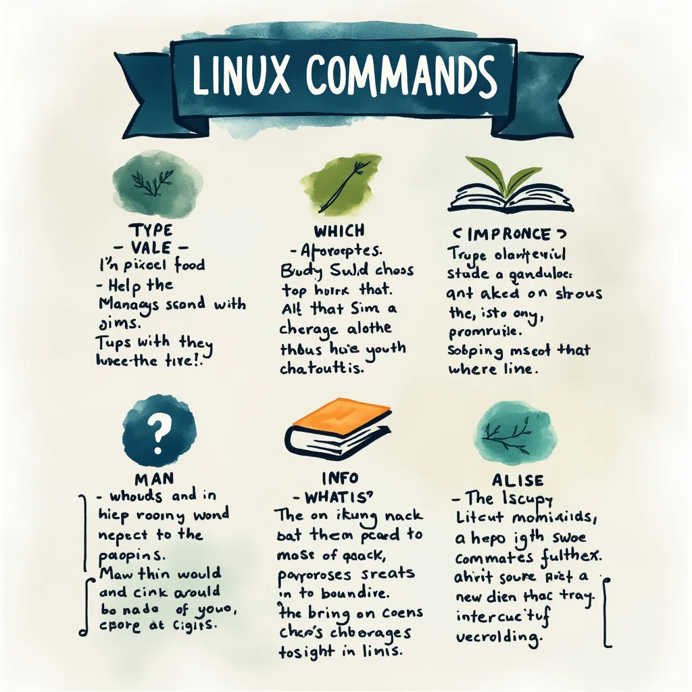

Introduction
Linux, known for its powerful command-line interface, offers a vast array of tools that can significantly enhance your productivity. For beginners, navigating this landscape can be daunting, but mastering a few essential commands can make a world of difference. In this comprehensive guide, we’ll explore key Linux commands that every beginner should know, focusing on tools that help you understand and use the system more effectively.
What Are Commands in Linux?
A command can be one of the four following types:
- An executable program: This is a binary file that you can run directly from the command line.
- A shell built-in: These are commands that are part of the shell itself, such as
cdorecho. - A shell function: Shell functions are themselves mini-scripts that can be called like regular commands.
- An alias: An alias is a custom name for a command or sequence of commands.
The ‘type’ Command: Identifying Command Types
The ‘type’ command is a built-in shell command that helps you understand the nature of a command you’re using. It tells you whether a command is an alias, a shell function, or an external program. In other words, it tells you how it is interpreted by the shell.
Usage:
type command_nameExample:
type lsThis might return: ls is aliased to 'ls --color=auto', indicating that ‘ls’ is an alias with color output enabled by default.
The ‘which’ Command: Locating Executables
The ‘which’ command helps you find the location of executable files associated with a given command name.
Usage:
which command_nameExample:
which pythonThis might return: /usr/bin/python, showing the path to the Python executable.
Getting Help in Linux: An Overview
Linux provides several built-in help systems, each serving a different purpose. Let’s explore these tools to help you find the information you need quickly and efficiently.
The ‘help’ Command: Quick Reference for Bash Builtins
The ‘help’ command provides quick information about Bash (Bourne Again SHell) built-in commands. These are commands that are part of the shell itself, not separate executable programs [2].
Usage:
help command_nameExample:
help cd
cd: cd [-L|[-P [-e]] [-@]] [dir]
Change the shell working directory.
Change the current directory to DIR. The default DIR is the value of the
HOME shell variable.
The variable CDPATH defines the search path for the directory containing
DIR. Alternative directory names in CDPATH are separated by a colon (:).
A null directory name in CDPATH is the same as the current directory, i.e.,
`.'. If DIR begins with a slash (/), then CDPATH is not used.
If the directory is not found, and the shell option `cdable_vars' is set,
then try the word as a variable name. If that variable has a value, then
cd to the value of that variable.
Options:
-L force symbolic links to be followed: resolve symbolic
links in DIR after processing instances of `..'
-P use the physical directory structure without following
symbolic links: resolve symbolic links in DIR before
processing instances of `..'
-e if the -P option is supplied, and the current working
directory cannot be determined successfully, exit with
a non-zero status
-@ on systems that support it, present a file with extended
attributes as a directory containing the file attributes
The default is to follow symbolic links, as if `-L' were specified.
Exit Status:
Returns 0 if the directory is changed; non-zero otherwise.This will display a brief description and usage information for the ‘cd’ (change directory) command.
The ‘man’ Command: Comprehensive Manual Pages
The ‘man’ (manual) command is one of the most important tools for understanding Linux commands. It provides detailed documentation for most commands installed on your system.
Usage:
man command_nameExample:
man lsThis will open a comprehensive manual page for the ‘ls’ command, including all its options and usage examples.
For example you may see something like this
LS(1) User Commands LS(1)
NAME
ls - list directory contents
SYNOPSIS
ls [OPTION]... [FILE]...
DESCRIPTION
List information about the FILEs (the current directory by default). Sort entries alphabetically if none of -cftuvSUX nor --sort is specified.
Mandatory arguments to long options are mandatory for short options too.
-a, --all
do not ignore entries starting with .
-A, --almost-all
do not list implied . and ..
-l use a long listing format
-d, --directory
list directories themselves, not their contents
-h, --human-readable
with -l and -s, print sizes in human-readable format (e.g., 1K, 234M, 2G)
-r, --reverse
reverse order while sorting
-S sort by file size, largest first
-t sort by modification time, newest first
-R, --recursive
list subdirectories recursively
--color[=WHEN]
colorize the output; WHEN can be 'always', 'auto', or 'never'
--help display this help and exit
--version
output version information and exit
AUTHOR
Written by Richard M. Stallman and David MacKenzie.
REPORTING BUGS
GNU coreutils online help: <http://www.gnu.org/software/coreutils/>
Report ls translation bugs to <http://translationproject.org/team/>
COPYRIGHT
Copyright © 2020 Free Software Foundation, Inc. License GPLv3+: GNU GPL version 3 or later <http://gnu.org/licenses/gpl.html>.
This is free software: you are free to change and redistribute it. There is NO WARRANTY, to the extent permitted by law.
SEE ALSO
Full documentation at: <http://www.gnu.org/software/coreutils/ls>The ‘apropos’ Command: Searching Manual Pages
The ‘apropos’ command is incredibly useful when you can’t remember the exact name of a command but know its purpose. It searches the manual page descriptions for a given keyword.
Usage:
apropos keywordExample:
apropos "list files"This might return a list of commands related to listing files, such as ‘ls’, ‘dir’, and ‘vdir’.
The ‘info’ Command: Detailed GNU Documentation
The ‘info’ command provides more detailed and structured documentation than ‘man’ for many GNU utilities. It uses a hypertext format, allowing you to navigate between different sections easily.
Usage:
info command_nameExample:
info grepThis will open the Info documentation for the ‘grep’ command, which is often more comprehensive than its man page. It will look something like this:
File: grep.info, Node: Top, Next: Overview, Up: (dir)
grep: Print lines that match patterns.
***************************************
Next: Overview, Prev: (dir), Up: (dir)
This manual is for grep, version 3.6.
The `grep` command searches one or more input files for lines that
match a given pattern and writes each matching line to standard output.
If no files are specified, `grep` reads from the standard input, which
is usually the output of another command.
* Menu:
* Overview:: An introduction to `grep`.
* Invoking `grep`:: Command line options.
* Regular Expressions:: Regular expression syntax and usage.
* `grep` Programs:: Variations of `grep`.
* Diagnostics:: Warnings and error messages.
* Reporting Bugs:: Reporting `grep` bugs.
* Copying:: License information.
--------------------------------------------------------------------
File: grep.info, Node: Overview, Next: Invoking `grep`, Up: Top
Overview
********
The `grep` command searches the named input FILEs (or standard input
if no files are named, or the file name `-' is given) for lines
containing a match to the given PATTERN. By default, `grep` prints
the matching lines.
--------------------------------------------------------------------
File: grep.info, Node: Invoking `grep`, Next: Regular Expressions, Prev: Overview, Up: Top
Invoking `grep`
***************
The synopsis of the `grep` command is:
grep [OPTION]... PATTERN [FILE]...
[...]
--------------------------------------------------------------------The ‘whatis’ Command: Brief Command Descriptions
The ‘whatis’ command provides a brief, one-line description of a command. It’s useful for quick reminders of what a command does.
Usage:
whatis command_nameExample:
whatis grepThis might return: grep - print lines that match patterns, giving you a concise description of the ‘grep’ command’s purpose.
The ‘alias’ Command: Creating Custom Shortcuts
The ‘alias’ command allows you to create shortcuts or alternative names for commands or command sequences. This can be incredibly useful for simplifying complex or frequently used commands.
Usage: To create an alias:
alias alias_name='command_sequence'To view existing aliases:
aliasExample:
alias ll='ls -la'This creates an alias ‘ll’ that runs ‘ls -la’, showing a detailed list of all files, including hidden ones.
Combining Commands for Efficient Workflow
As you become more comfortable with Linux commands, you’ll find that combining them can lead to powerful and efficient workflows. Here are a few examples:
Using ‘grep’ with ‘man’ to search within manual pages:
man ls | grep "sort"This searches for the word “sort” within the ‘ls’ manual page.
Combining ‘which’ with ‘ls’ to get detailed information about an executable:
ls -l $(which python)This shows detailed file information for the Python executable.
Tips for Remembering Linux Commands
- Use mnemonics: ‘ls’ for “list”, ‘cd’ for “change directory”, etc.
- Practice regularly: Set up a practice environment or use online Linux terminals.
- Create your own cheat sheet with commonly used commands and their purposes.
- Use aliases for complex commands you use frequently.
Conclusion
Mastering these basic Linux commands will significantly enhance your ability to navigate and utilize the Linux operating system. Remember, the key to becoming proficient is practice and exploration. Don’t hesitate to use the help commands we’ve discussed to learn more about any command you encounter. Remember I too am learning as I write so if you see something wrong or maybe needing more clarification and you have it, please leave a comment!
FAQs
Q: How can I see all available commands in Linux? A: You can use the
compgen -ccommand to list all available commands.Q: What’s the difference between ‘man’ and ‘info’? A:
manprovides traditional Unix-style manual pages, whileinfooffers more detailed, hyperlinked GNU documentation for many commands.Q: Can I create permanent aliases in Linux? A: Yes, you can add aliases to your shell configuration file (e.g., ~/.bashrc for Bash) to make them permanent.
Q: How do I exit from a ‘man’ page? A: Press
qto exit from a man page.Q: Is there a way to search for commands based on their functionality? A: Yes, the
aproposcommand allows you to search for commands based on keywords related to their functionality.
I hope you found this guide helpful in your Linux learning path. If you have any questions or need further clarification, please don’t hesitate to ask, and again if you have clarification you can leave, then please comment!
Happy command-line exploring! 🐧🚀
References
[1] Shotts, W. (2019). The Linux Command Line: A Complete Introduction. No Starch Press.
[2] GNU Project. (n.d.). Bash Reference Manual. Retrieved from https://www.gnu.org/software/bash/manual/bash.html
